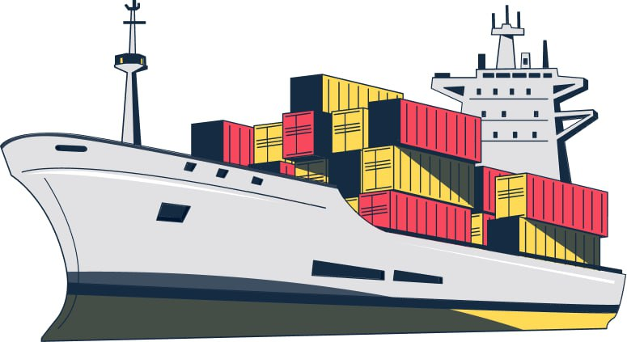
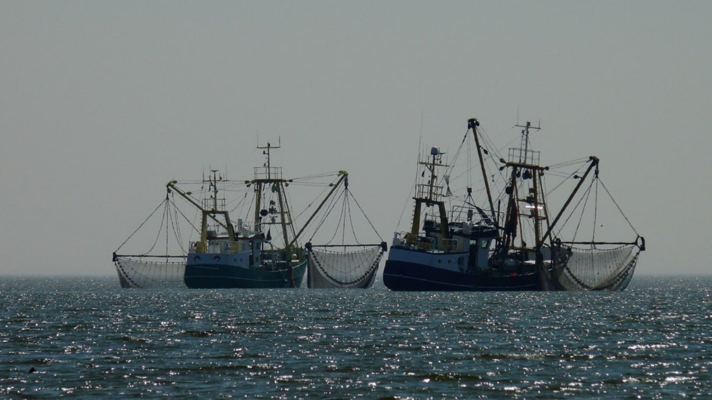
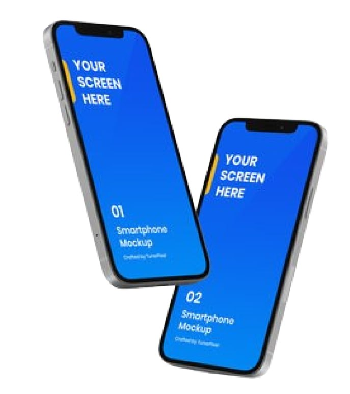
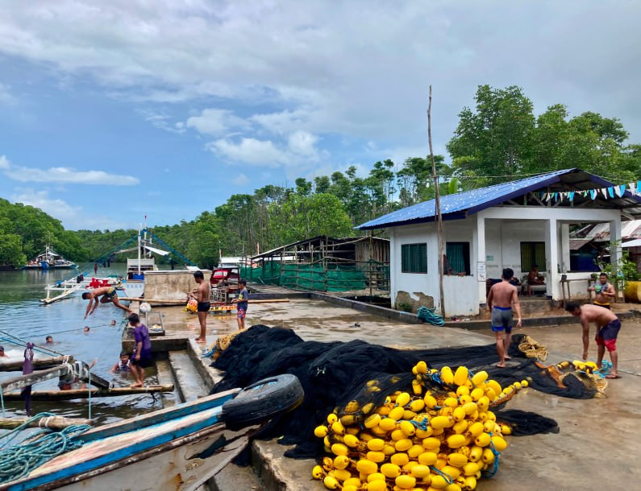

OUR MISSION IS SIMPLE
PROTECTING OUR OCEANS FROM NEFARIOUS THREATS
- Illegal, Unregulated, Ureported Fishing (IUUF)
- Environmental Degradation
- Smuggling And Trafficking

PROBLEM
- The Ocean is vast and difficult to monitor
- Existing Technologies leave significant gaps in maritime domain awareness
- Poor Traceability and catch documentation enables sustainable fishing practices in developing coastal nations

SOLUTION
- O2g's search app crowdsources geotagged catch data and vessel reports from fishermen at sea
- Reliable catch data is utilized to improve seafood traceability
- Vessel reports illuminate nefarious and destructive actvity:
- Illegal, unreported and unregulated (iuu) fishing
- Smuggling, Trafficking, Piracy
- Illegal Dredging or Dumping
- Actionable, Timely insights delivered to maritime authorities to facilitate interdiction

HOW OUR APPROACH IS DIFFERENT
- Tapping into human networks vs relying on sophisticated space-based technology: we get out of the office and build relationships in fishing communities
- Economic incentives and empowerment of artisanal fisherfolk
- Low-overhead, scalable, sustainable
- Improved maritime communications infrastructure enabling connectivity
